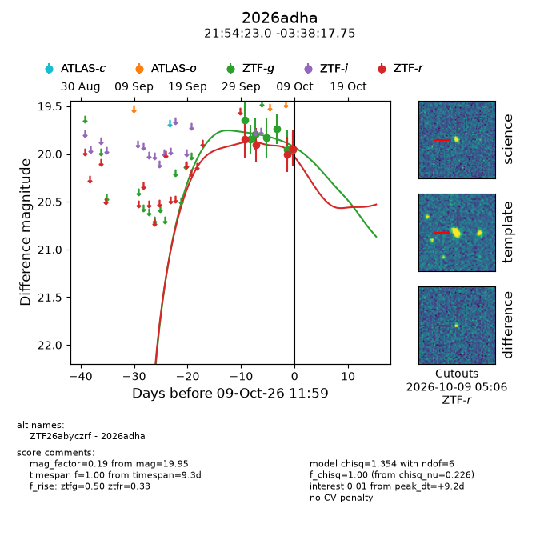
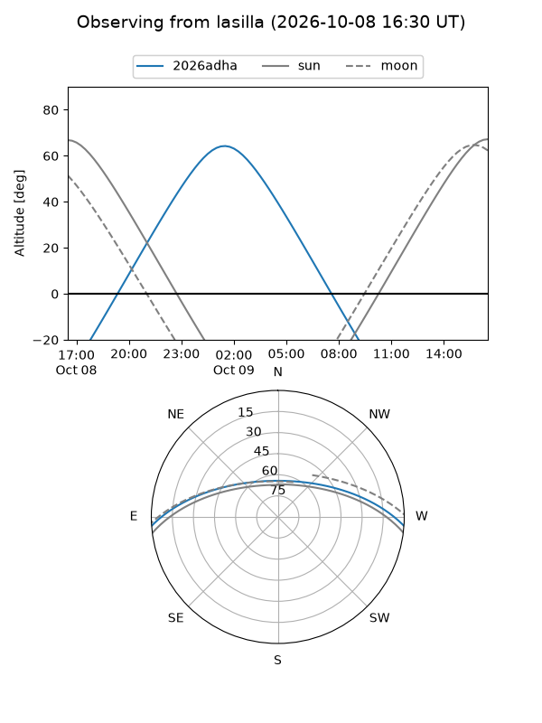
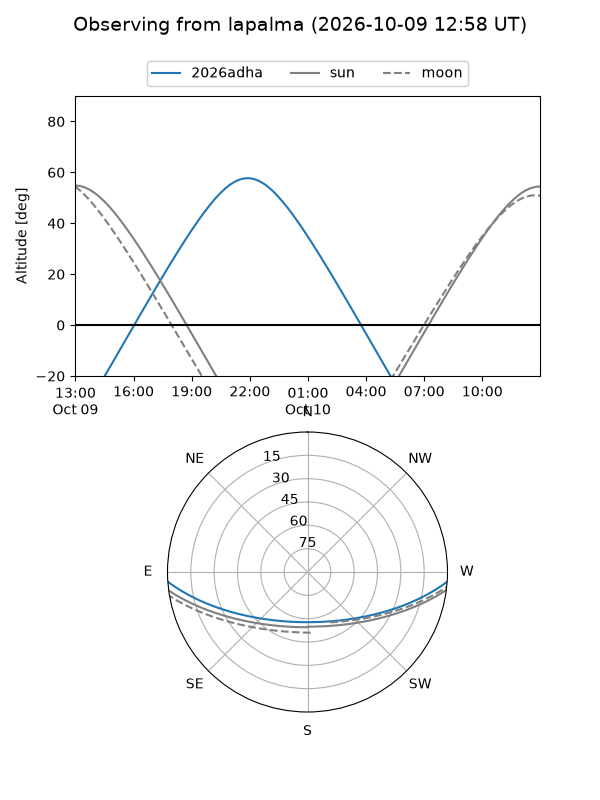
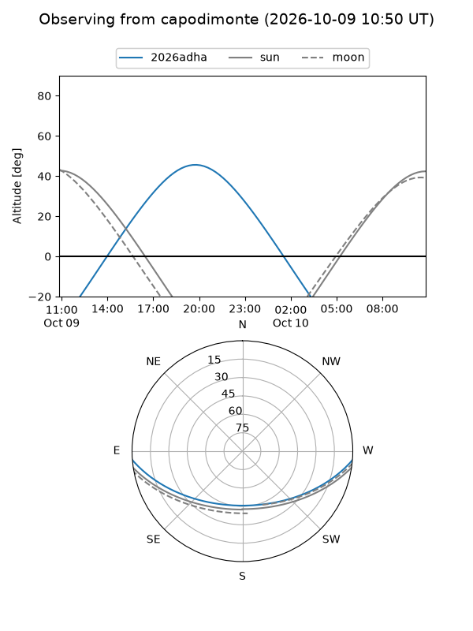
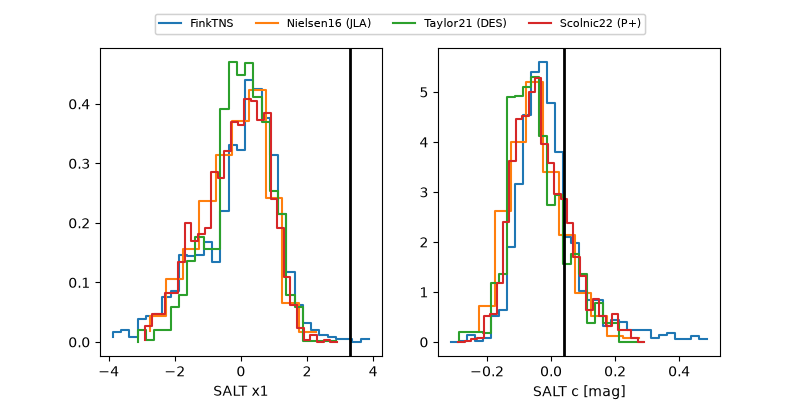

2026adha
Target 2026adha at 2026-10-09 12:01
Aliases and brokers:
FINK-ZTF: ztf.fink-portal.org/ZTF26abyczrf
Lasair-ZTF: lasair-ztf.lsst.ac.uk/objects/ZTF26abyczrf
ALeRCE-ZTF: alerce.online/object/ZTF26abyczrf
YSE-PZ: ziggy.ucolick.org/yse/transient_detail/2026adha
TNS name: wis-tns.org/object/2026adha
Direct TNS query: direct search
alt names
ZTF26abyczrf (ztf,fink_ztf)
2026adha (tns,yse)
Coordinates:
equatorial (ra, dec) = 328.5957,-3.63826
equatorial (HMS+DMS) = 21:54:22.96,-03:38:17.75
galactic (l, b) = (54.0772,-41.68243)
Flags:
peak dt: +9.2
Photometry:
last ztfg=19.95, ztfr=19.94
7 ztfg, 4 ztfr detections
Lightcurve

Visibility



Additional plots
